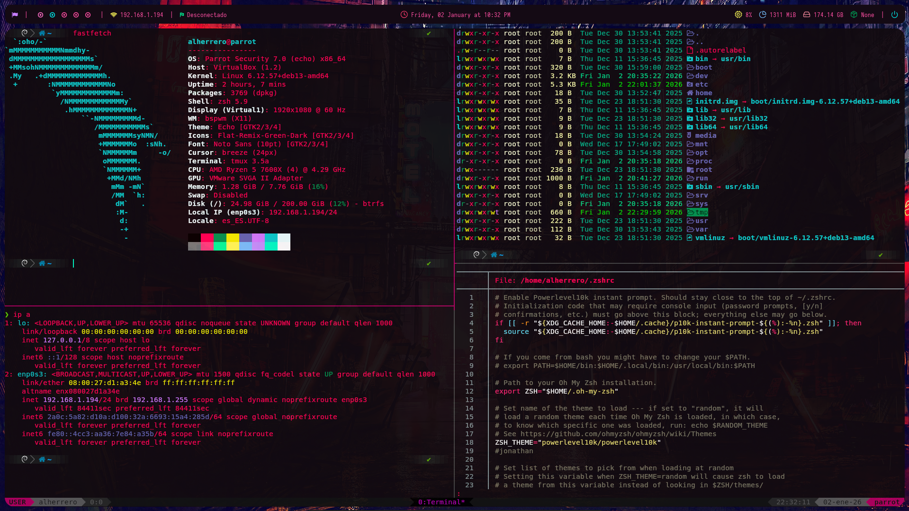

Soy Alejandro, un entusiasta de la ciberseguridad al que le gusta aprender algo nuevo cada día. Me centro principalmente en el pentesting web, teniendo experiencia reportando varias vulnerabilidades a empresas.
Trabajo con Windows y Linux, configuro máquinas virtuales y desarrollo scripts en Python. Uso tecnologías web como HTML, CSS y JavaScript para reforzar mis habilidades y proyectos personales. Aprendo rápido, me adapto con facilidad a nuevos desafíos y siempre busco maneras de mejorar y crecer en el campo del hacking ético.

Entorno personalizado de BSPWM creado en Parrot y orientado al pentesting.
Ver en githubA continuación se presentan vulnerabilidades reales que he reportado en infraestructuras corporativas.
Por motivos de seguridad, los nombres de las empresas han sido omitidos.
Esta vulnerabilidad la encontré en un centro educativo. En una sección de anuncios para profesores, no se validaba el ID de la persona que accedía al contenido.
Esta vulnerabilidad me permitió listar anuncios de profesores sin disponer de dicho rol.
Esta vulnerabilidad la encontré en un panel de administración de amonestaciones a los trabajadores de la empresa. Mediante fuzzing, encontré un endpoint que pude explotar realizando una inyección SQL de tipo error-based.
Esta inyección me permitió obtener toda la base de datos y acceder como administrador a la plataforma. Además, pude reutilizar la contraseña de un usuario administrador para acceder a un WordPress.
Estoy abierto a nuevas oportunidades y colaboraciones en proyectos de pentesting.
alejandroherrero95h@gmail.com